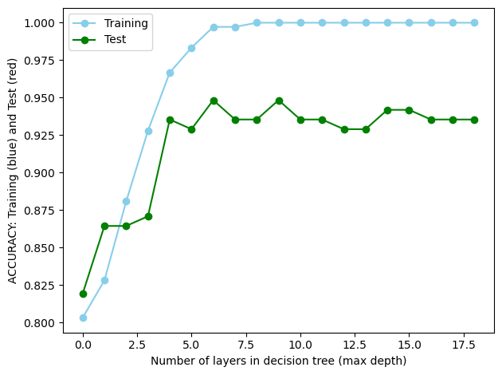
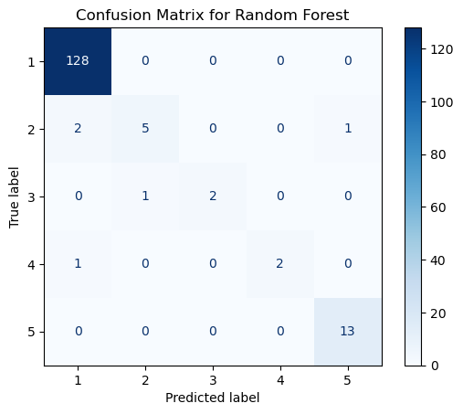

Within this tab I will use a classification decision tree in order to classify certain tuples as sustainable or not.
This model aims to explore whether specific variables are good indicators of the extent to which policies relate to the ocean. The decision tree visualization allows us to see which features are most important in determining the sustainability category. This can provide valuable insights into what action countries are taking and how it has a impact on their sustainability level - which is being classified into the bins.
If the model performs well, the findings could have the ability inform data-driven decision-making in policy development specifically with regard to ocean sustainability and conservation efforts.
By understanding the variables that influence sustainability levels, conservation initiatives can be targeted and tailored to address specific challenges faced by countries.
Decision Tree Classification
The decision tree algorithm works by recursively splitting the data based on the features (attributes) to create a tree-like structure. Each internal node of the tree represents a decision based on a particular feature, and each leaf node represents the class label (1,2,3,4,5). 1 being least sustainable and 5 being most sustainable. The final leaf node reached determines the predicted class for that tuple.
Target - Percentage of Policy out of all policy in a year relating to ocean sustainability. I binned these values into five bins. These bins are 0-17, 18-36, 37-54, 55 - 72, 73 - 87. For example, Bin 1 includes countries that have 0-17% of policy relating to ocean sustainability each year, bin 2 is 18-36% of policy relating to sustainability, etc.
The new column Binned_Value was added to use as the target variable.
Code
# Create bins for values to be placed in 1, 2, 3, 4, 5y = trees['Value']bin_edges = [0, 18, 36, 54, 72, 87]y_binned = pd.cut(y, bins=bin_edges, labels=False, include_lowest=True)trees['Binned_Value'] = y_binned +1trees.head()
Aqua Production (Millions)
Marine Protected Area (sqkm)
Inventions (number)
Instruments (number)
Fishing Exports (Millions)
Value
Country
Year
Binned_Value
0
376896.50
485.10
12.00
5.0
1963.38
10.64
Australia
2000
1
1
55.25
5.65
0.33
0.0
739.13
0.00
Belgium
2000
1
2
24661.75
605.08
23.33
8.0
4431.00
5.23
Canada
2000
1
3
8849.75
2124.58
1.00
4.0
3118.12
19.05
Chile
2000
2
4
29421.75
235.18
0.00
0.0
321.71
0.00
Colombia
2000
1
Class Distribution
This decision tree algorithm may be biased towards the majority class (bin 1), leading to lower accuracy for minority classes. You can see the class distribution results below.
This baseline comparison can be used to act as a simple benchmark that helps us understand how well the decision tree models are performing and whether the chosen metrics are appropriate for your problem. If the decision tree model below cannot outperform this simple random prediction… there might be issues with the models or data.
Code
from collections import Counterfrom sklearn.metrics import accuracy_score, precision_recall_fscore_supportimport numpy as np# Random Classifier functiondef random_classifier(y_data): num_classes =len(np.unique(y_data)) ypred = np.random.randint(1, num_classes +1, size=len(y_data)) # Random predictions for Binned_Value classesprint("-----RANDOM CLASSIFIER-----")print("Count of Predictions:", Counter(ypred).values())print("Probability of Predictions:", np.fromiter(Counter(ypred).values(), dtype=float) /len(y_data)) accuracy = accuracy_score(y_data, ypred) precision, recall, fscore, _ = precision_recall_fscore_support(y_data, ypred, average=None)print("Accuracy:", accuracy)print("Precision (Class 1, Class 2, Class 3, Class 4, Class 5):", precision)print("Recall (Class 1, Class 2, Class 3, Class 4, Class 5):", recall)print("F1-score (Class 1, Class 2, Class 3, Class 4, Class 5):", fscore)y = trees['Binned_Value']random_classifier(y)
-----RANDOM CLASSIFIER-----
Count of Predictions: dict_values([112, 100, 116, 97, 91])
Probability of Predictions: [0.21705426 0.19379845 0.2248062 0.1879845 0.17635659]
Accuracy: 0.17829457364341086
Precision (Class 1, Class 2, Class 3, Class 4, Class 5): [0.78021978 0.08247423 0.03 0.01724138 0.07142857]
Recall (Class 1, Class 2, Class 3, Class 4, Class 5): [0.17274939 0.18181818 0.21428571 0.15384615 0.23529412]
F1-score (Class 1, Class 2, Class 3, Class 4, Class 5): [0.28286853 0.11347518 0.05263158 0.03100775 0.10958904]
Decision Tree Classifier
Using DecisionTreeClassifier from sklearn.tree we can implement a decision tree.
Code
# X = ALL FEATURES BESIDES value, binned_value and countryX = trees.drop(['Value', 'Binned_Value', 'Country'], axis =1)# Target variable is BINS (classifying data into these bins)y = trees['Binned_Value']# Split dataset into training and testing X_train, X_test, y_train, y_test = train_test_split(X, y, test_size=0.3, random_state=1)# Decision Tree classifierclf = DecisionTreeClassifier(criterion="entropy")# Training Classifierclf = clf.fit(X_train, y_train)# Predicting response for datasety_pred = clf.predict(X_test)
Evaluating Performance
After implementing the decision tree, the accuracy score tells us that this model is 91% accurate. Furthermore, the precision, recall and f-1 scores are all very high as well.
# Code given in 5000 resourcestest_results = []train_results = []for num_layer inrange(1, 20): model = DecisionTreeClassifier(max_depth=num_layer) model = model.fit(X_train, y_train) yp_train = model.predict(X_train) yp_test = model.predict(X_test) test_results.append([num_layer, accuracy_score(y_test, yp_test), recall_score(y_test, yp_test, average='weighted')]) train_results.append([num_layer, accuracy_score(y_train, yp_train), recall_score(y_train, yp_train, average='weighted')])plt.plot([column[1] for column in train_results], marker='o', color="skyblue", label="Training")plt.plot([column[1] for column in test_results], marker='o', color="green", label="Test")plt.ylabel("ACCURACY: Training (blue) and Test (green)")plt.xlabel("Lyers in Decision Tree (max depth)")plt.legend()plt.tight_layout()plt.show()

Confusion Matrices
Confusion Matrices help evaluate the performance of a classification model by comparing its predictions to the actual ground truth.
Instruments (number) <= 9.500, is the starting point for the decision-making process. This condition splits the data into two branches based on whether this condition is true or false.
First Level:
If Instruments (number) <= 9.500 is true, it further checks Inventions (number) <= 2.350. If false, it follows the opposite branch.
Second Level:
If Instruments (number) <= 9.500 and Inventions (number) <= 2.350 are both true, it checks Fishing Exports (Millions) <= 1486.940.
Third Level:
The tree continues to branch based on various conditions, etc
Leaf Nodes:
The leaf nodes provide the classification outcome based on the conditions met along the path from the root node to that leaf.
Class Labels:
Each leaf node has a class label (1, 2, 3, 4, 5) indicating the predicted class for the given set of conditions!!!!
Random Forests
Additionally, I completed random forests on my data. Random forests are a collection of decision trees. Decision trees are the building blocks or random forests.
Random forests have three main hyperparameters, which need to be set before training. These include node size, the number of trees, and the number of features sampled. After setting these hyperparamters, the random forest classifier can be used to solve for regression or classification problems.
rf_conf_matrix = confusion_matrix(y_test, y_rf_pred)disp = ConfusionMatrixDisplay(confusion_matrix=rf_conf_matrix, display_labels=sorted(y.unique()))disp.plot(cmap='Blues', values_format='d')plt.title('Confusion Matrix for Random Forest')plt.show()

Once again, this model does a very good job predicting Bin 1. This is a result of bin 1 having the highest number of tuples within the dataset.
Results and Conclusions
Overall the decision tree and random forest models have very high accuracy. Although, this may be due to the large number of countries that fall within Bin 1 - as shown by the class distribution.
Decision trees are a very intuitive machine learning model. This model allows readers to see what attributes are taken into account when classifying a tuple as sustainable.
A few interesting things to point out:
The top most condition is based off of Policy Instruments. Policy Instruments are the amount of policy that has been released per year relating to sustainability (not just ocean sustainabiloty) by country.
The random forest algorithm preformed better than the classification decision tree!